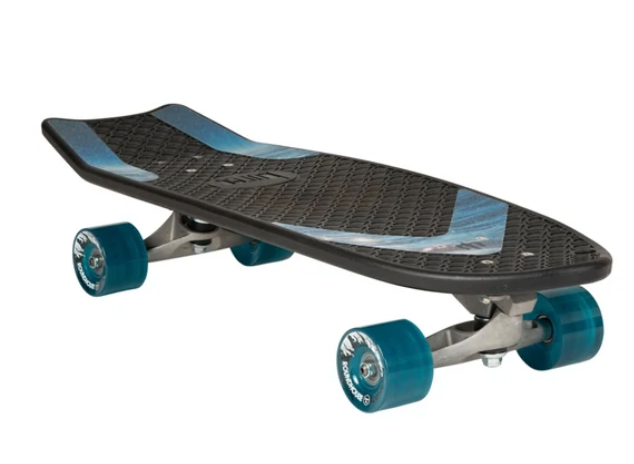
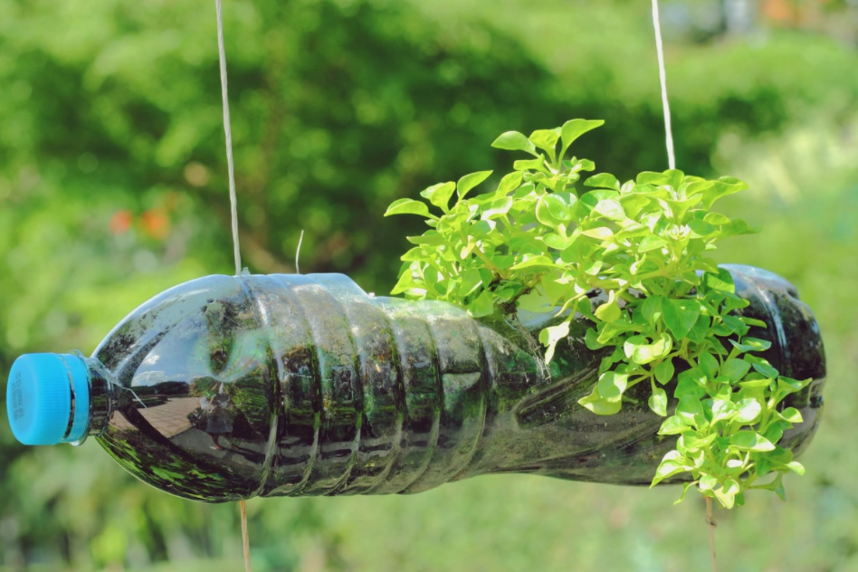

Upcycling: An Art of Reinvention.
By Sofia Regina

Recently, I watched the film ‘Seaspiracy’ Dir. Ali Tabrizi, a film about the environmental impact of fishing that explores the various impacts human activity has on marine life and advocates for severely limiting fish consumption. I digested an overwhelming amount of information, some of the most arresting facts I remember were that 46% of the Great Pacific Garbage Patch is made up of fishing nets or that the current prediction is that 90% of the world's coral reefs will die by 2050. One of the approaches to overcoming the perishing state of marine life that was discussed briefly, was upcycling.
What is upcycling?
A lot of people misperceive upcycling as recycling, they do have the same basic idea, which is to take old things and products and turn them into something new. But the difference lies in what exactly is done with old products. With recycling, old products and materials are broken down to their absolute raw properties, to create the same variety of products, while with upcycling, old things are either put together or taken apart to give them a new or additional function. To take from the word itself you are creating a product of a higher quality or better purpose than before AND you can do it by yourself! Aside from minimizing the amount of discarded material and waste that is sent to landfill each year, a huge benefit of upcycling is that it reduces the need for production using new or raw materials that leads to a reduction in air pollution, water pollution, and greenhouse gas emissions all of which are ramifications of processes that generate new material through factory production.
Upcycling the Oceans in Thailand
Bringing this back to the film I watched, upcycling in the marine scene is gaining traction. In 2017, Thailand commenced the project “Upcycling the Oceans” with the aim to raise awareness about responsible tourism and the issues regarding ocean pollution amongst tourists and citizens. The objective of the project was to recover marine debris with fishermen’s help, beach-cleaning associations, and diver communities and to then transform whatever waste they could into sustainable fashion products. In 2017, in a day excursion, a total of 0.7 tonnes of marine waste was collected on the island of Koh Samed. Their most recent endeavor was in 2019 and involved the collection of 0.92 tonnes of marine debris in the Commemoration Public Park, Ban Phe in the eastern coastal province of Rayong.
Bureo
Remember the unexpected fact I mentioned earlier? About how the biggest ocean pollution problem isn’t plastic straws like a lot of media would like us to believe, but fishing nets. While reading about this fishing net problem I discovered a brand named Bureo, a US startup that creates jackets, hats, and even skateboards out of discarded fishing nets. Currently, they have collected nearly 1,600 tonnes of discarded fishing nets! Check them out at bureo.co.

Do it Yourself!
Upcycling is even cooler when you are using things you never thought you would! If you have any used plastic bottles, here’s a fun way to upcycle them into planters!

Upcycling plays a notable role in what we do at Repair the Waves, as our currently selling shirts are made of upcycled plastic waste gathered from the ocean such as bags and bottles.
Citations
- Bureo, n.d. Skateboard. [image] Available at:
- Bureo. n.d. Shop Bureo. [online] Available at:
- Unisan UK. 2020. What Does Upcycling Mean and Why Is It So Important? What is the difference between recycling and upcycling? | Unisan UK. [online] Available at:
- Home, B., Contenido, B. and Thailand, B., 2017. Project Upcycling the Oceans. [online] Ecoalf. Available at:
- Bergen, T., 2021. Seaspiracy inspires grocery store to stop selling fish. [online] Inhabitat - Green Design, Innovation, Architecture, Green Building | Green design & innovation for a better world. Available at:
- Oceandimensions.com. 2021. Seaspiracy - Ocean Dimensions team was deeply shocked.. [online] Available at:
- Seaspiracy. 2021. [film] Directed by A. Tabrizi. United Kingdom: A.U.M. Films; Disrupt Studios.
- Marinescene.asia. 2017. Thailand first to join Upcycling the Oceans | Marine Scene Asia. [online] Available at:
- Averett, N., n.d. Net Gain How to upcycle fishing nets into skateboards. [Blog] Tea after Twelve,.
- Earth.Org - Past | Present | Future. 2021. 13 Facts From ‘Seaspiracy’. [online] Available at:
- FutureLearn. n.d. The Benefits of Upcycling. [online] Available at:
- WWF. n.d. Coral reefs and climate change: from cradle to an early grave. [online] Available at: